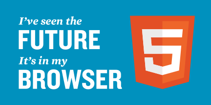
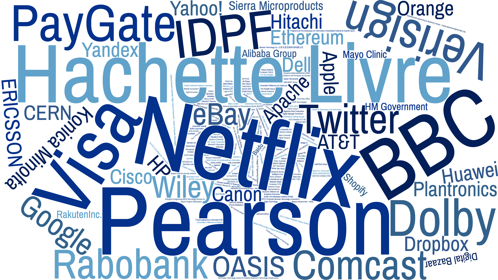

Accesibilidad Universal en el Entorno Virtual. La Web
TALLER ACCESIBILIDAD al Entorno Construido y Virtual. OBLIGACIONES Y OPORTUNIDADES
Martín Álvarez-Espinar — Oficina W3C España/CTIC
Gijón, 19 octubre 2017
28 años de la Web

La Web en 1990

La Web crece

El World Wide Web Consortium (W3C)
- Organismo neutro internacional
- +80 personas en el Team
- +400 organismos Miembro de todos los sectores y tamaños
- El trabajo es desarrollado por +1.500 de los mejores investigadores de esos organismos Miembro dentro de +70 grupos de trabajo
Con el objetivo de llevar a la Web a su máximo potencial.

Realmente WorldWide
Los clásicos evolucionan...
Más efectiva y eficiente
- Semantic Web
- Geolocation
- Spatial Data on the Web
- Dataset Exchange
- Efficient Extensible Interchange
- RDF Data Shapes
- XML Query
- XSLT
- Web Performance
- Web Real-Time Communications
Más segura y con privacidad
- Privacy
- Web Security
- Permissions and Obligations Expression
- Verifiable Claims
- Web Application Security
- Web Authentication
- Tracking Protection
Garantizando una Web Universal
- Accessibility
- Internationalization
- Audio
- WebFonts
- SVG
- Timed Text
Verticales (por industria)

Realidad Aumentada y Virtual en la Web
Automoción

Entretenimiento

Publicación Digital

Comercio en la Web

Social Web, Web of Things, Blockchain,...

Un objetivo
Llevar la Web a su máximo potencial
Acceso universal
...ofrecer la misma información y servicios a los usuarios, independientemente de quienes son, donde están, los sistemas que usan o la forma mediante la que se conectan
Independiente del dispositivo
- PCs, lectores de eBook, teléfonos, TVs, PDAs, dispositivos en electrodomésticos o en automóviles...
- limitación en: ancho de banda, pantalla, colores, sonido...
video
..."discapacidades" de los usuarios
- distinción de colores, ceguera, ...
- dificultades de manejo de teclados, ratón, ...
- dislexia, dificultades cognitivas o neurológicas, ...

..diferencias culturales, geográficas o lingüísticas
- sentidos de escritura, diferentes tipos de teclados, ...
- formato de fechas, números de teléfono, códigos postales, IDs,...
Photo: Dick Thomas Johnson
Emmy ® Award


{kind=link}